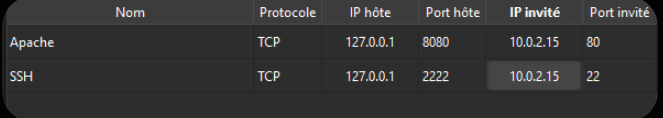

Installation d'un poste de développement
Rapport technique de la SAÉ S1.03 - Groupe Gr110 / Binôme 04 composé de :
Amine
LaghouaneMohamed
NahedMohamed
ToumiObjectif de la mission
"Le but de cette SAÉ est dans un premier temps de s’initier à la technique de virtualisation en installant un environnement et en créant une machine virtuelle. Dans un second temps, il s’agit d’installer un serveur web et de l’utiliser pour mettre en ligne ce rapport."
Configuration Technique
- VM : Ubuntu Server 22.04 LTS
- Ressources : 4 Go RAM | 30 Go Disque
- Réseau : NAT avec redirection (8080/2222)

Preuve de la configuration réseau NAT